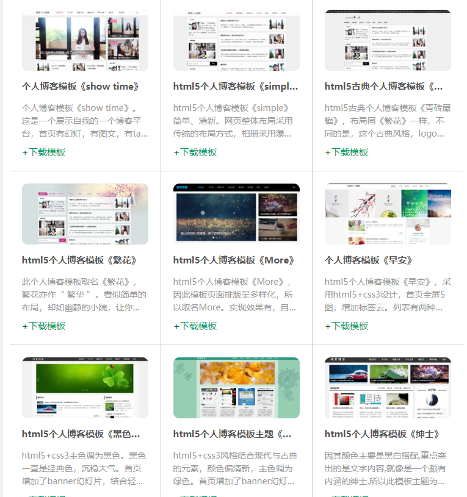

各大博客门户网站，相继关闭，做一个独立的个人博客网站，那是将来的趋势。 越来越多的个人站长倾向于独立建站，有个属于自己的博客网站，那如何快速建立自己的个人博客网站呢， 接下来，我就简单给大家介绍一下：以阿里云为例
1、购买域名
连接地址： https://wanwang.aliyun.com/?utm_content=se_1558788
2、购买服务器
阿里有一个云翼计划，云翼计划是阿里云特别为在读大学生推出的云计算培养计划，旨在为大学生网络创业提供先进的技术支持， 同时也帮助大学生学习、了解最新的云计算知识，创新开拓，放飞梦想！其中学生购买服务器有很大的优惠
3、然后搭建你的博客网站，你也可以选择模板
连接地址： https://www.yangqq.com/download/
在此： 感谢您观看我的网站，你的到来，是我的荣幸！